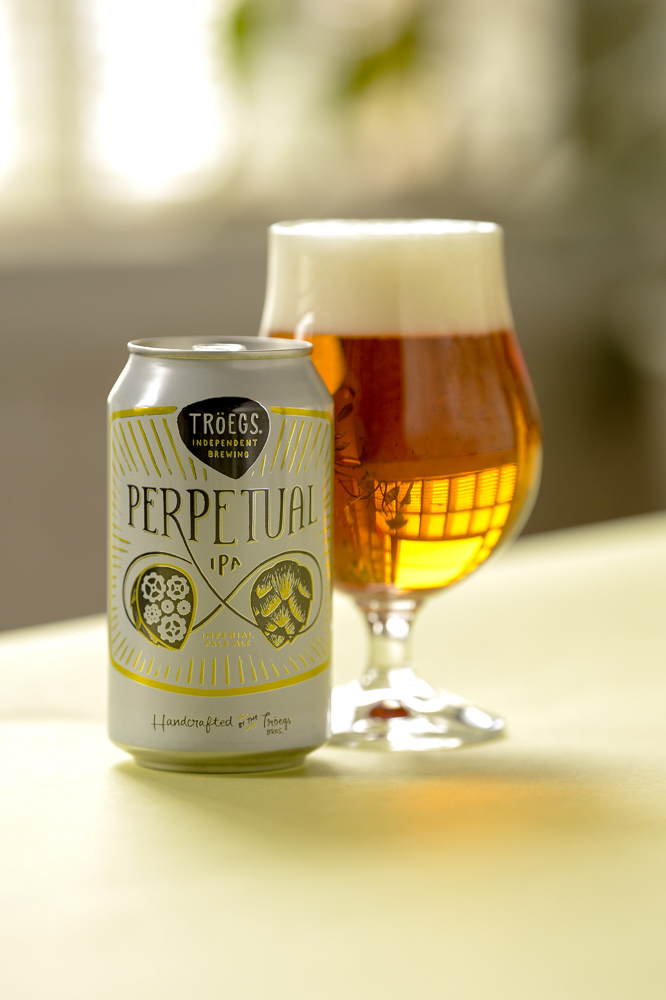

HOME
OUR PICKS
Perpetual IPA
Troegs Independent Brewing Co.
At Tröegs, artisanal meets mechanical in a state of IPA they call Perpetual. Cycling through their HopBack vessel and dry-hopping method, this bold Imperial Pale Ale emerges rife with sticky citrus rind, pine balm and tropical fruit.
Located in Hershey, PA, the Tröegs community morphed into a home for kindred spirits with wide and varying ideas, which partly explains the Tröegs portfolio of tangential offerings. In a very real way every beer at Tröegs is a Scratch Series beer – a random concept the brothers hatched for their 10th anniversary that still serves as the launching point for new beers.
Check out their site HERE 